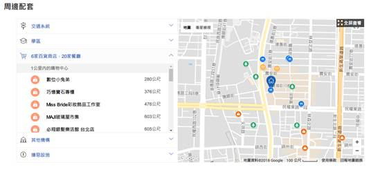
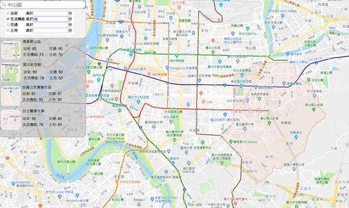

附件三、產品或服務構想書格式範例（PDF上傳繳交）
2018資料創新應用競賽
產品或服務構想書
|
參賽編號 |
OD-19580177 |
||
|
產品或服務名稱 |
Scorela |
||
|
市場(使用)族群 |
房屋仲介公司 |
||
|
產品或服務簡介 |
Scorela是一個為台灣的各個地區依照各自擁有的條件(生活機能、治安設施、交通便利性等)去計算出該地方的價值的一個服務。 主要的目的是讓欲買房的人能夠清楚的看見目標區域的各個項目的分數，亦或是從分數當作門檻來選定購買房屋的目標區域，讓欲買房者能夠找到適合自己的區域並在區域內找到理想中的房屋。 |
||
|
資料來源 (請詳列) |
資料集提供機關名稱 |
資料集名稱 |
資料集連結 |
|
政府開放平台 |
各縣(市)警察(分)局暨所屬分駐(派出)所地址資料 |
https://data.gov.tw/dataset/5958 |
|
|
|
社會經濟資料服務平台 |
106年行政區寺廟統計_縣市 |
https://segis.moi.gov.tw/STAT/Generic/Project/GEN_STAT.ashx?method=downloadproductfile&code=4BEBCD623EE0318D5EA8853667EEEBB3&STTIME=106Y&STUNIT=U01CO&BOUNDARY=全國 |
|
|
社會經濟資料服務平台 |
105學年全國行政區大專校院統計_縣市 |
https://segis.moi.gov.tw/STAT/Generic/Project/GEN_STAT.ashx?method=downloadproductfile&code=13C7A05078CD70458CBA4A26386EEB2C&STTIME=105Y&STUNIT=U01CO&BOUNDARY=全國 |
|
|
社會經濟資料服務平台 |
106年12月醫療院所分布圖_全國 |
https://segis.moi.gov.tw/STAT/Resources/Project/Images/Downloadlink.png |
|
產品或服務說明 |
壹、 緣起與創作目的 買房一直以來是許多人必經的過程，但是消費者不一定能馬上了解想要買房的區域，往往會浪費許多時間在查詢資訊，在這個資訊爆炸的時代，如果我們能夠將所有消費者想要考量的資訊數值化、視覺化，讓消費者能夠一目了然的了解這個區域的優點及缺點，那麼消費者就可以在一定的時間內參考更多房屋資訊，而房屋仲介也可以不必將每間房子冗長的房屋資訊全部交給消費者花費許多時間看完，進而讓消費者能夠一目了然的比較不同的房屋，可以減少消費者花在比較房屋的時間，並提高成交的機率。 1.
台灣房屋 台灣房屋提供了從安全指標、生活型態、人文指數、人口密度這四個面向去給予這間房屋一系列的評分，讓消費者了解該間房屋周遭的生活型態。 2.
591、永慶等房屋仲介網站  大部分提供賣房資訊的網站都如同上圖的形式，以房屋為中心去篩選周遭有的設施，顯示在地圖上並標示距離。 3. Scorela(我們的服務) 我們的服務是以地圖為基礎，根據地圖區域與區域所擁有條件下去計算，算出該區域的價值。 我們與台灣房屋的差異在於，台灣房屋是以該間房子作為基準點去評分，比較像是這間房屋的附帶資訊，在搜尋房屋時無法以此分數作為搜尋條件進行篩選。 而我們的服務是要提供一整個區域的分數，我們讓想買房子的人不需要一間一間的看房子，才去的到那間房子周遭的生活條件。 先透過我們的服務，找到滿足他們理想條件的區域後，再去找這個區域是否有他們理想的房子，這是我們想要達成的事情。 參、使用對象 主要的使用對象是房屋仲介，本服務可以使許多資訊表現在圖表或是數值上，可以讓仲介以視覺化的方式提供消費者更多資訊並比較。 肆、產品或服務特色說明 我們開發的服務特色主要是希望能夠透過政府提供的開源資料(Open data)整合並數值化及圖表化，以往的仲介網站通常都只會有地圖表示、單純顯示距離多遠或是一些很主觀的資訊，但以消費者的角度來看這些資訊，通常會因為每個消費者關注的東西太多或是不同而導致分析區域的喜好度過於緩慢，我們希望能夠讓消費者所有想要的資訊全部做成數值評分以及分類，這樣消費者也可以很直觀的透過這些評分來去做比較，所以我們主要服務特色就是希望能夠做出一個可以做為消費者決定的一個標準。 伍、產品或服務功能(請條列之) l 顯示台灣所有區域之評分 l 顯示單獨某些面向的評分 l 根據使用者的喜好做綜合篩選 l 與房屋仲介公司串接，當使用者選定喜好區域後，顯示該目標區域正在出售的房子 陸、未來規劃(如功能擴充等) 目前不管哪種仲介網站或是我們目前的功能都只能顯示目標地區的分數或顯示資訊，但卻不能夠預測未來這個區域可能的發展性，我們希望能夠藉由機器學習去學習以前的資訊以及未來建案資料來預測未來可能的發展性分數。 未來也希望能夠透過記錄使用者的搜尋紀錄，推薦使用者可能會有興趣的區域 |
||
|
產品或服務 雛型設計圖 |
一、
預計之搜尋頁面  |
||
|
文件規格：以A4格式，最多不得超過10頁，並請另存為PDF檔案上傳繳交。 |
|||